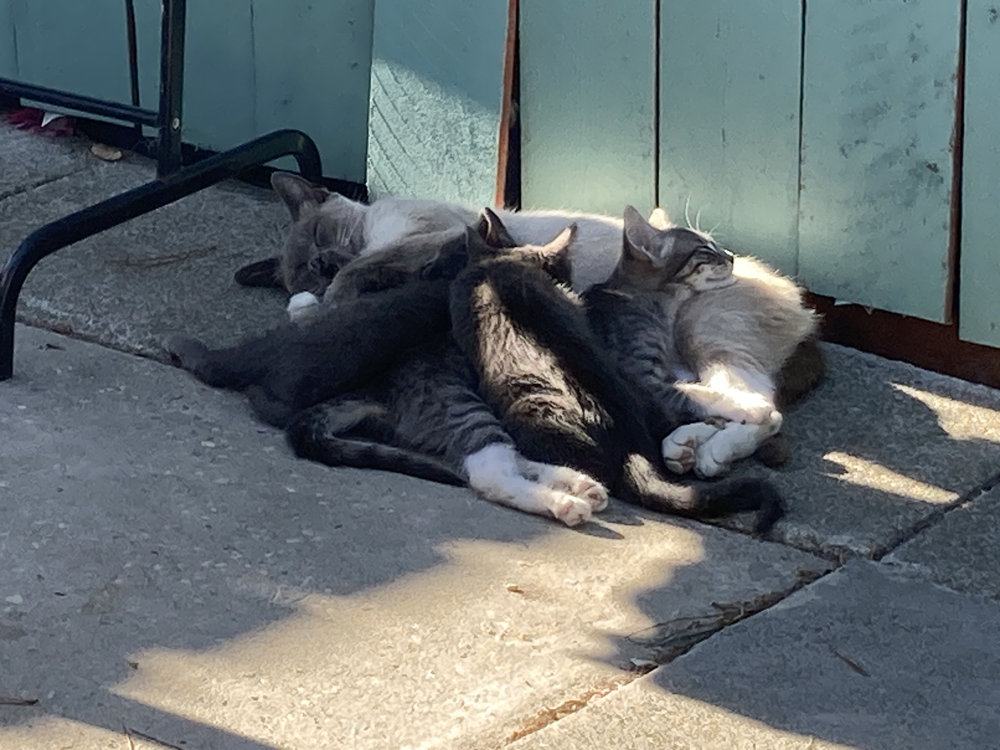
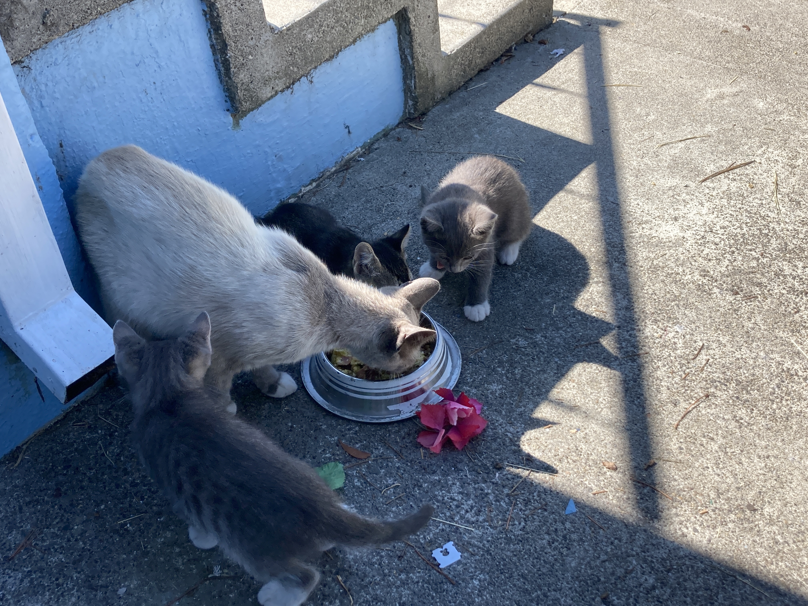
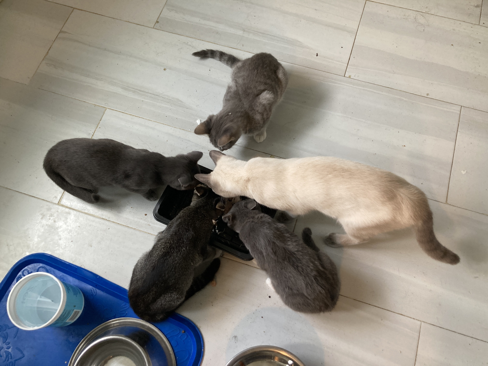
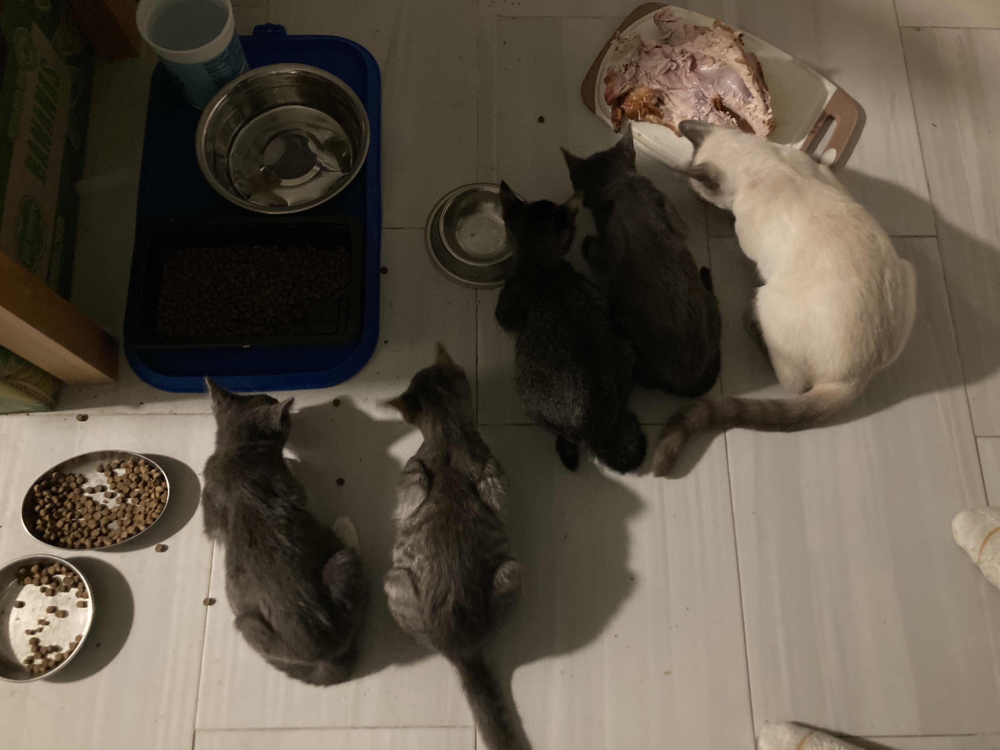
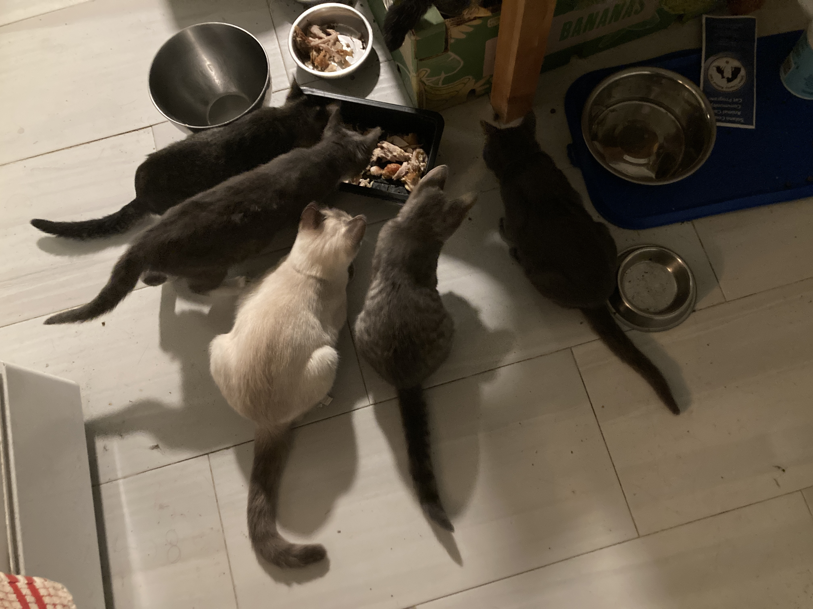
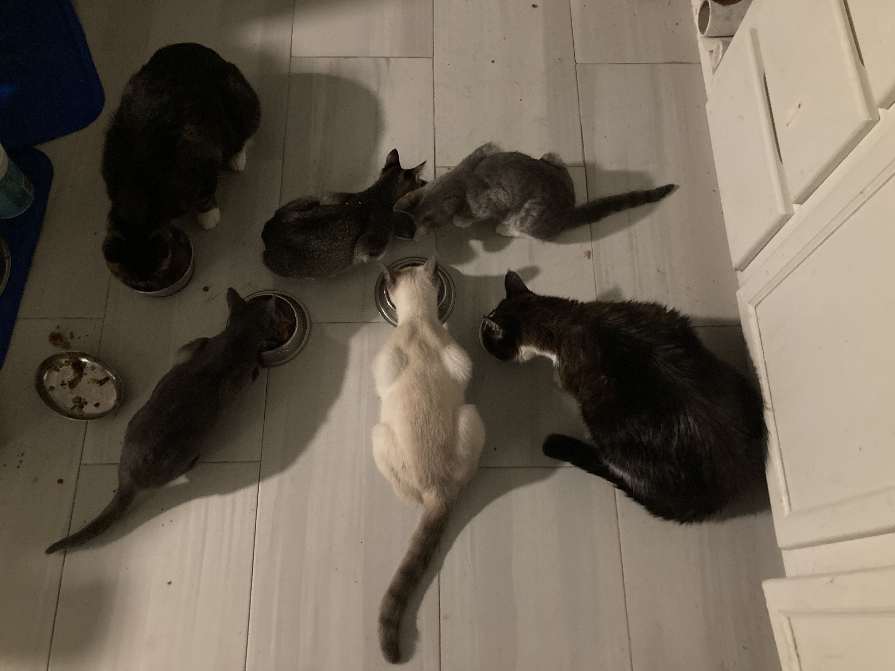

Ham Stuffed Kittens

There were Thanksgiving sales on spiral cut ham. You can't beat $8.90
for 10lbs of low quality salty meat. I was left with a bone with ham scraps on it that I threw out onto
the front lawn.
There is a dog that comes by when it smells food out of my kitchen
window. Usually the dog is alone but this time there were 4 newborn kittens with it. The kittens were
tentitively gnawing at the ham bone and growling at the dog. I filled cat bowls with spiral cut ham and
let them eat in peace.
The next day I looked out into the front lawn. The ham bone was stripped
clean. Kittens were passed in a corner with one of our cats. Who knew cats liked ham so much.
They Like Breakfast

We have 3 cats of our own. The Siamese has decided the 4 stray kittens
are hers. She started bolting out the door to care for them.
November had turned into December. I setup a few Costco boxes and our
Siamese was bringing them her toys. All 3 of our cats started to tell me the kittens were hungry so I
started leaving out milk and cat food in the backyard for them.
One morning I was making scrambled eggs, cheese, and ham. I heard
meowing and the kittens were waiting at the back door. I guess milk and cat food wasn't cutting it so I
gave them my breakfast.
They Live Here Now

Rain started flooding my backyard. I was getting tired of chasing our
Siamese around the neighborhood. I was herding cats at this point.
We decided to let them in rather than leave them outside.
Our cats were used to the stray kittens at this point. Surprisingly our
cats were OK with
them eating in the kitchen. I have seen our cats be gracious and accepting of the kittens.
Sale Turkey

I had meant for the kittens to stay a day or two. The shelters were
full. They had nowhere to go but they were mowing through Costco bags of cat food.
I recall how much the kittens liked turkey. I was buying the blowout
39-cent deals at Safeway and Lucky. Spatchcock the carcass to cram into a dutch oven with salt.
I seem to make the best kitten food. They are having a ball with our
older cats. It seems like the kittens are learning how to be part of a cat pack.
Piles of Bones

This is becoming ridiculous. I have 8 cats in the house. They all get
along but the upkeep reminds me of teenagers. They eat everything I put down.
I'm starting to notice a tick and tock pattern to Safeway and Lucky
sales. They switch off some cheap meat deal weekly. I personally do not like wings and thighs but they
are on sale.
I'm learning how to fill a Dutch oven. Let it go low and slow with a
little salt and cats will eat whatever you cook. An entire $7 mega pack of wings and thighs lasts a week
so it more cost effective than a $1 can of tuna.
Fried Chicken

I'm Chinese, we know how to fry chicken. If you look at an American
Chinese menu it's mostly pork chops, fried chicken, and cheap sliced beef.
The kittens have acclimated to living with us. I'm not so into the fur
tornado when they decide it's play time. I need to find them permanent homes.
This was a learning experience about cat behavior. Assuming cats
eat only certain things, won't socialize with others, or any number of cat things I have seen proven
wrong.
Available kittens
☰ click here
Kitten delivery